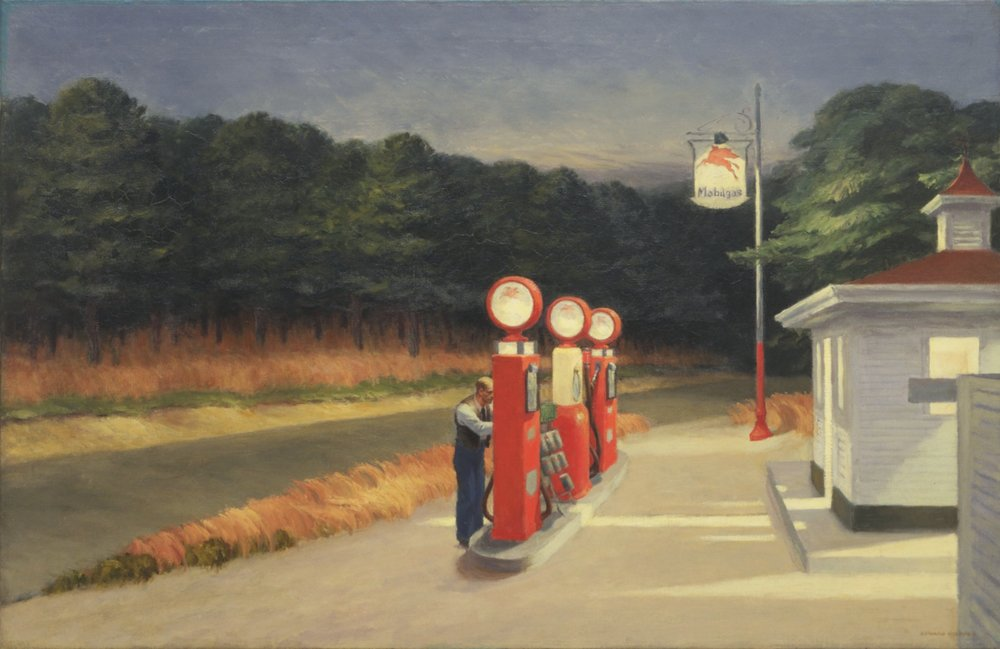

Gas
Edward Hopper · 1940 · Oil on canvas · 66.7 × 102.2 cm · Museum of Modern Art, New York
In copyright. Look and learn: shown for study, not for download.
The gas station is a composite of several that Hopper had visited. He wanted to paint a station with the lights lit above the pumps, but the stations in his area turned their lights on only when it was pitch dark, to save energy. According to his wife Josephine, he had wanted to paint the subject for a long time. The finished picture differs from his preliminary studies in many details.